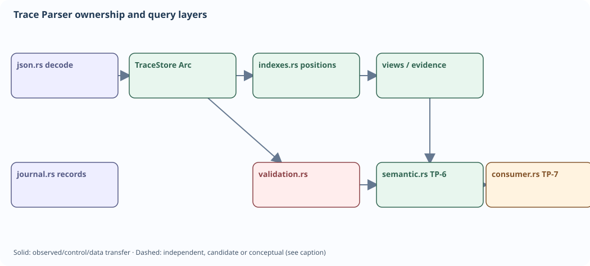

6 · Trace Parser architecture #
Two terms first #
| Term | Meaning |
|---|---|
| Deserialize | Turn JSON text into Rust records. Proves the file is readable in the expected format, not that its claims agree. |
| Validate | Check relationships between records (e.g. does a claimed realloc predecessor have supporting events?). |
The parser answers questions about a recorded trace without rebuilding or silently correcting it. It does not guess which record the author meant. Its store is immutable (nothing changes after loading), and queries borrow the original records: you get a reference, not a copy. Positions in compact indexes point back into one canonical Arc<DebugSessionTrace>.
Loading is not validating #


| File | Job |
|---|---|
json.rs | Selects and decodes supported schema-v2 JSON |
journal.rs | Handles ordered JSONL records separately |
mod.rs | Constructs TraceStore |
indexes.rs | Builds position-based lookups instead of cloning records |
views.rs | Exposes raw and borrowed views |
evidence.rs | Checks trace-scoped references |
validation.rs | Opt-in checks; can report a trace as structurally unsound, partial, or having an unavailable relationship |
semantic.rs | Confidence-qualified evidence via validated_semantic() |
consumer.rs | Bounded checkpoint pages (up to 128 entries per request) |
Imported trace ownership #

- Cloning a
TraceStoreshares its trace and indexes throughArc, so a clone is cheap. - A second, independently loaded copy of an identical JSON document is a different owner.
- An
EvidenceRef(a citation pointing to one record) is valid only against the store that issued it. Another store's numeric positions don't become valid references.
Memory notes:
- Index memory estimates are not the parser process's RSS (memory the process actually holds), and not a cap on whole-trace RAM.
- The exporter's cap applies to each written JSON document, not to an assembled trace in memory.
The realloc repair (TP8-F01) #
| Found by | The historical TP-8 audit (a review of the parser) |
| Problem | A forged realloc predecessor could be reported with Definite confidence (the strongest level) even though nothing supported it |
| Fix | TP8-F01 changed deep validation and semantic confidence |
| Now required | Compatible recorded realloc events and lifetime boundaries from the same PID |
| Unchanged | Raw imported fields are still preserved; schema-only loading is still allowed |
Reading order: deep validation → confidence → the approved Stage 1 audit. The older conditional TP-8 report predates the repair.
Next implementation path #
Start at src/trace_parser/mod.rs, then json.rs, indexes.rs, views.rs, validation.rs. The function index also lists private parsers and helpers. The DOC-3 parser handbook already explains their control flow in more detail.